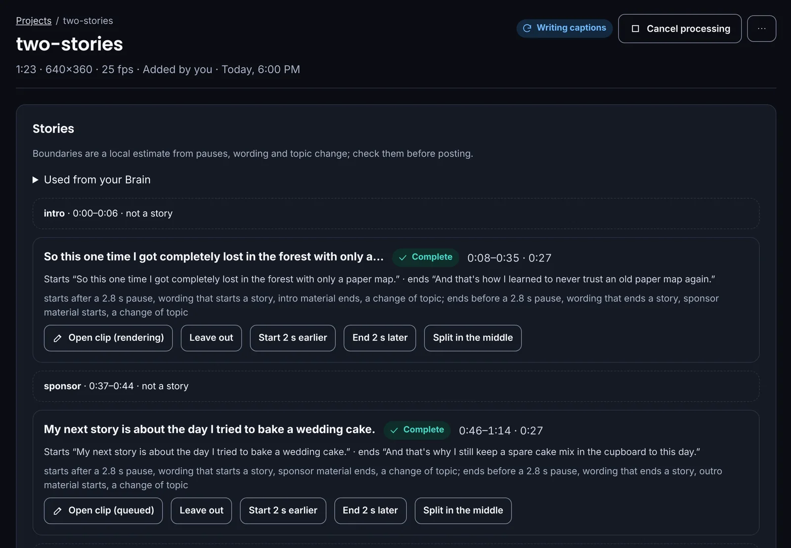

Turn a long video into clips, or your clips into a YouTube video.
ClipForge runs on your own computer. It finds the strongest moments or every complete story,
frames them for vertical video with captions, and uploads only to the accounts you choose.
ClipForge runs on a Windows PC or a Mac. Open this page there to download it.
The robot crew
COMMANDDirector
TRACKERDiscovery
VECTORAnalysis
FRAMEClip studio
SCRIPTCaptions
CLOCKSchedule
HARBORPublishing
SWITCHSystem
CURATORLearning
Twenty-five robots, one for every job. A robot moves when its job really starts, and rests
when nothing is running. Rename any of them; their jobs stay the same.
Two ways to make something
Make clips
Pick Highlights for the strongest short moments, or Full stories for one complete clip per
story, from its setup to its ending. Each clip is vertical, captioned, and framed to follow the speaker.
A story too long for an account is kept whole, and ClipForge tells you which accounts can take it.

Make a YouTube video
Drop in your clips and images, answer four short questions, and get a rough cut you can still change:
move or remove clips, shorten the introduction, set captions, transitions and music level. Every change is
a version you can go back to.
It remembers how you like it
Your style, saved
Save a style once with Remember this style, or import a written editing
skill. Every project shows exactly what it used from your Brain.
Several accounts
Connect more than one YouTube channel and TikTok account, and choose where
each project goes. TikTok posts always wait for your OK.
Your computer, your files
Videos are processed on your computer. Nothing is posted until
it passes a final check of the exact file, and only to the accounts and audience you picked.
Download the Windows ZIP, right-click it and choose Extract All.
In the extracted folder, double-click Open-ClipFoundry.cmd and keep its window open. The first
start sets everything up, which takes a few minutes.
ClipForge opens in your browser. Use the same file to open it next time.
An NVIDIA graphics card makes listening to your videos much faster. The file keeps its
ClipFoundry name so an existing ClipFoundry setup, with its Brain, accounts and clips, is found and kept.
Mac
Check that your Mac has Apple silicon (M1 or newer) and macOS 15 or newer.
Quit any older ClipFoundry, open the DMG and drag the app into Applications.
Open it. The first time, macOS may stop it: open System Settings › Privacy & Security
and choose Open Anyway.
Keep the app running for scheduled work. Closing its window keeps it running; Quit stops it.
The app is called ClipFoundry in Finder so your existing Brain, clips, accounts and
settings stay where they are. It is a personal preview: not signed or notarized by Apple.
Check your download
Each file below has an exact size and a SHA-256 fingerprint. If yours matches, it is the file that was tested.